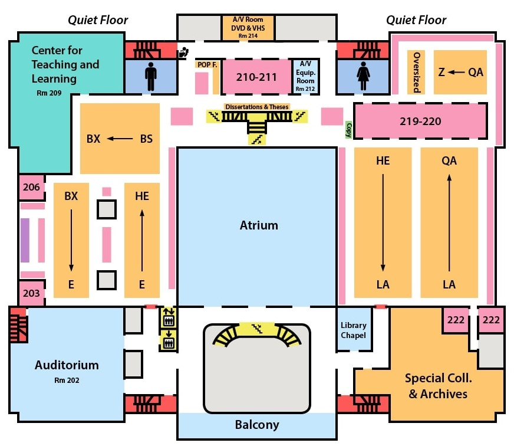

Soteria
↻
|
Location...
|
Notification...
View local map...
×
Floormap is recommended if you are nearby or familiar with the building. If not, it is highly encouraged to use a local map of the surrounding area.
Permissions key:
✅ - Success
⏳ - Timed out
❓ - Failed to retrieve
⛔ - Access to service denied
❌ - Not supported by your browser
